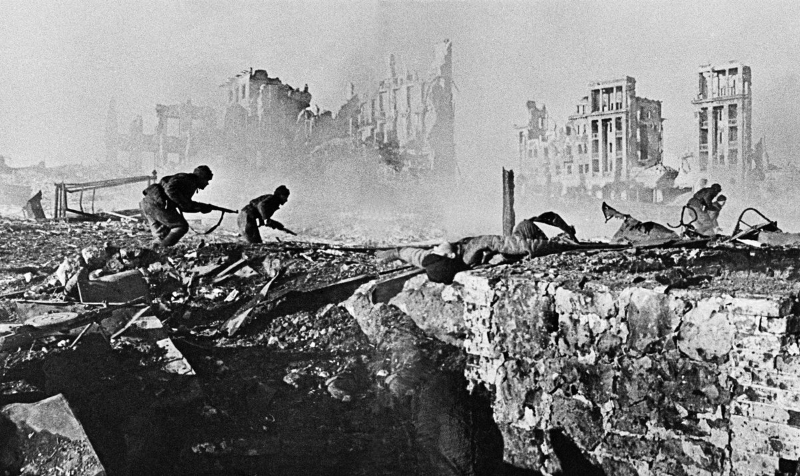
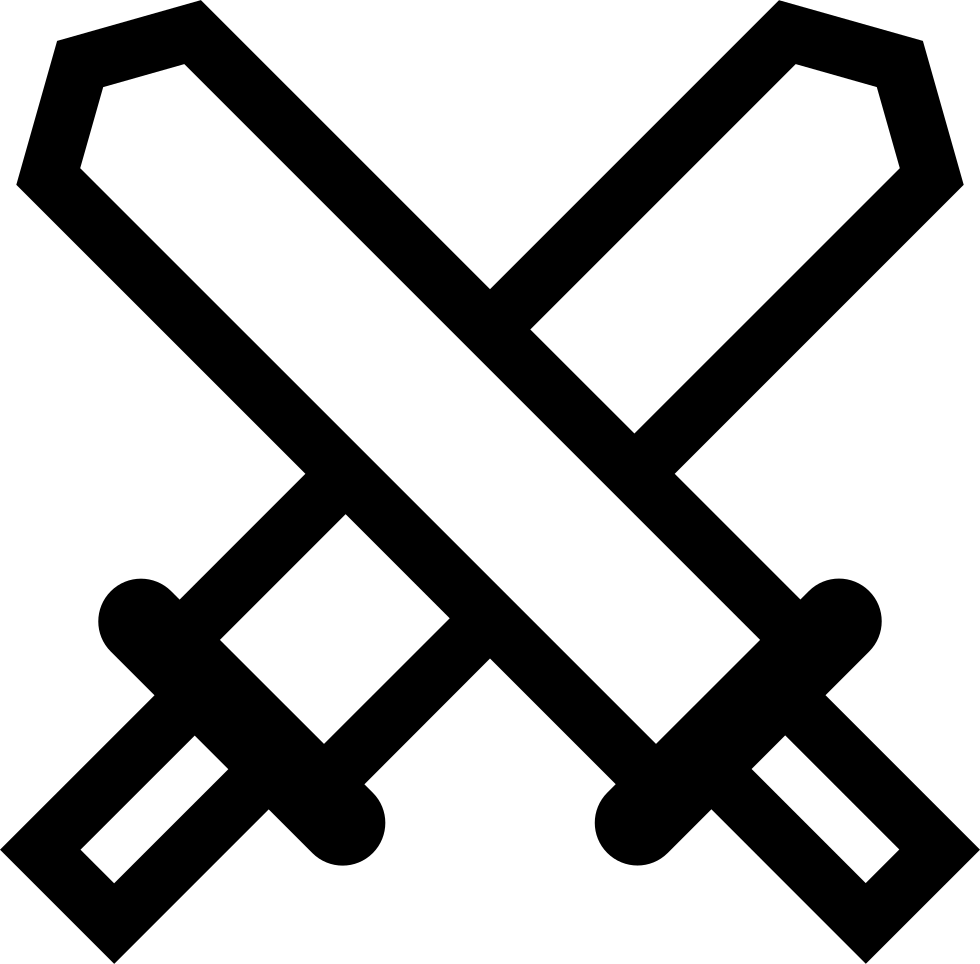
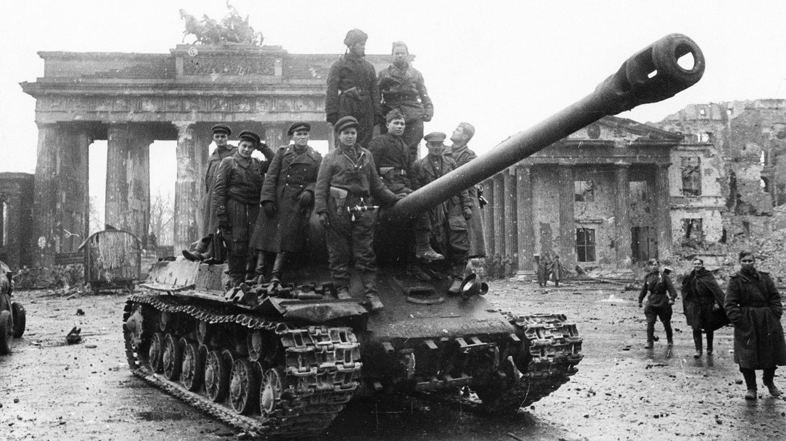

Bitwa pod Stalingradem  Jedna z najważniejszych, najbardziej przełomowych i najbardziej krwawych bitew XX wieku.  23 sierpnia 1942 roku, po klęsce Operacji Barbarossa, Hitler nie chciał się poddać i kontynuował ofensywę w kierunku Moskwy 4 i 6 Armia Pancerna, wraz w Luftwaffe zaatakowały Stalingrad (dzisiaj Wołgograd) przy użyciu 270 tysięcy żołnierzy, co później przekształciło się w ponad 1 milion. Do połowy listopada niemcom udało sie opanować niemal 90% terenów miasta. 19 dnia tego miesiąca Armia Czerwona rozpoczęła operację Uran, czyli wyeliminowanie słabszych armii sprzymierzonych Hitlerowi, czyli Rumuńskich, Włoskich i Węgierskich i odciąć w ten sposób 6 Armię, co się ostatecznie udało. Żołnierze radzieccy otrzymali kultowy Rozkaz nr 227 - "Ani kroku w tył!", co według niektórych, dodało im sił do walki. Po 5 miesiącach, tygodniu i 3 dniach od momentu ataku, 2 lutego 1943, armia niemiecka skapitulowała z powodu braku amunicji, żywności oraz utraty morale. Podczas tej bitwy zginęło około 2 milionów ludzi. Na co składa się: Około 500 tysięcy żołnierzy ZSRR Od 650 - 870 tysięcy żołnierzy państw Osi Reszta - cywile, w tym dzieci Bitwa jest uznawana za punkt zwrotny w całej II Wojnie Światowej, po której Armia Czerwona przejęła inicjatywę i odbiła większość terenów zabranych podczas operacji Fall Blau, będącej kontunuacją Operacji Barbarossa W listopadzie 1944 sam Hitler obwinił Stalingrad za zbliżającą się klęskę Niemiec.
Operacja Overlord Operacja Overlord, w której skład wchodzi Lądowanie w Normandii lub inaczej D-Day. Druga co do wielkości (zaraz po Operacji Market Garden) operacja wojskowa przeprowadzona na Zachodnim froncie wojny. Operacja oficjalnie się rozpoczęła 6 czerwca 1944 roku, Lądowaniem w Normandii, na północy Francji. Lądowanie polegało na desancie około 175 tysięcy żołnierzy alianckich na terytorium okupowanej przez III Rzeszę Francji. Podczas starć zaistniałych zaraz po desancie, zginęła większość z 10 tysięcy zgromadzonych tam Niemców, przy stratach aliantów na poziomie 4,414 potwierdzonych śmierci i 185 czołgów M4 Sherman. O D-Day piosenkę napisała szwedzka grupa muzyczna Sabaton, o tytule "Primo Victoria" Walki marynarzy i lotników polskich w czasie lądowania w Normandii zostały, po 1990, upamiętnione na tablicach Grobu Nieznanego Żołnierza w Warszawie – poświęconej marynarzom napisem: „INWAZJA W NORMANDII 6 VI 1944”, a na poświęconej lotnikom napisem „NORMANDIA 6 VI 1944”. Podczas końcowej fazy operacji, kulminacyjnym momentem była bitwa pod Falaise, co pozwoliło aliantom wyzwolić Paryż. Łączny stan liczbowy alianckich sił ekspedycyjnych wynosił około 2,88 mln żołnierzy.
Bitwa o Berlin  Bitwa która zakończyła istnienie III Rzeszy 1 kwietnia 1945 w kwaterze głównej w Moskwie odbyła się narada poświęcona planom operacji berlińskiej. Stalin wyznaczył datę rozpoczęcia ofensywy na 16 kwietnia i dał dwa tygodnie na jej zakończenie. Siły zapewnione do zdobycia Berlina były na skalę niespotykaną do tej pory na froncie wschodnim – łącznie w operacji miało wziąć udział 2,5 mln żołnierzy, 41 600 dział i moździerzy, 6250 czołgów i dział samobieżnych oraz 7500 samolotów. W tej liczbie znajdowało się 185 tys. żołnierzy dwóch armii Ludowego Wojska Polskiego. Ich uzbrojenie stanowiło 3000 dział i moździerzy, 508 czołgów i dział samobieżnych oraz 320 samolotów. Rano 30 kwietnia gen. Mohnke w rozmowie z Hitlerem powiedział, że obrona miasta nie potrwa więcej niż dwa dni. Niedługo później Weidling, który też przybył do bunkra Hitlera, stwierdził, że kapitulacja nastąpi jeszcze tej nocy, z powodu braku amunicji. Hitler zgodził się na próbę wydostania się z miasta. Po południu Hitler i Eva Braun popełnili samobójstwo. 1 maja o godz. 4:00 nad ranem niemiecka delegacja z gen. Hansem Krebsem na czele dotarła do kwatery gen. Czujkowa. Krebs poinformował Czujkowa o samobójstwie Hitlera i chęci rozpoczęcia negocjacji na temat poddania miasta. Po kapitulacji Berlina w innych rejonach Europy wojska niemieckie także zaczęły składać broń. 2 maja siły niemieckie, liczące około miliona żołnierzy, w północnych Włoszech i południowej Austrii skapitulowały. Tuż przed północą 8 maja w dzielnicy Karlshost w Berlinie zebrały się delegacja aliancka i niemiecka, po czym podpisano akt bezwarunkowej kapitulacji Niemiec. Trzy fronty radzieckie poniosły straty w wysokości 78 291 zabitych lub zaginionych i 274 184 rannych lub chorych. Utracono 2108 dział i moździerzy, 1997 czołgów i dział samobieżnych oraz 917 samolotów.